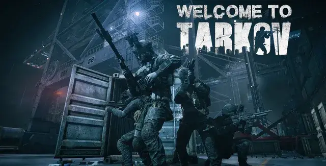

![WTT - Black Division [REDACTED] Home thumbnail](../../../assets/f1ce1279d6164999fe3ef6996fe9a32c6030cc970b54760930c7a0acec0de7e3.webp)
WTT - Black Division [REDACTED] Home
- Downloads
- 69,435
- Favourites
- 188
- Mod lists
- 318

Black Division [REDACTED] Home adds Black Division as a proper faction. They are an elite and secretive PMC currently under the employment of TerraGroup, presumably cleaning up any loose ends the company left in Tarkov. It’s best not to dig too deep into TG’s secrets, or else you might end up becoming a target.
INSTALL INSTRUCTIONS

This mod requires BigBrain, MoreBotsAPI, WTT Content Backport and WTTCommonLib to run. Waypoint is not required currently but recommended. I also recommend SAIN for enhancing the combat behavior of the Black Division bots and for configuring their characteristics.
Note on uninstalling when using SAIN
Seems I found what causes a non-aggression bug, at least with SAIN and my bot mods. If you uninstall a custom bot mod that uses MoreBotsAPI then SAIN will keep references to the now-removed bots in its Default Bot Config Values folder, causing client errors that prevent SAIN from loading properly for bots and disabling their combat behaviors. Deleting the files in this folder and letting SAIN reset them fixes the problem.
Features
That’s for you to find out.
Config
There is a config file in the server part of the mod called config.jsonc. You can modify the spawn chances of random hunts, times hunts can appear, the maps hunts can spawn on, alongside the spawn chances for Labs gate and starting groups.
Compatability
These bots function with SAIN and through the MoreBotsAPI there is support for customizing the bots characteristics like you would other bot types.
Should work with most spawn mods as long as they don’t override boss spawns that aren’t vanilla. My previous UNTAR mod was tested with ABPS and MOAR and it worked with those. I haven’t tested with any of the new 4.0.0 spawn mods so let me know if there are incompatabilities I might be able to address.
Also, if you disable bosses in any way these bots won’t spawn. They use the vanilla boss spawn system.
If WTT Armory is installed, the BD bots will use some of the weapons and attachments from the mod. As more updates come additional loadout options, both vanilla and incorporating Armory, will be implemented.
Credits and Thanks
Thanks to the WTT team for abducting having me on the team! I’m excited to be able to contribute to the project. They all worked incredibly hard to backport the 1.0 content for Christmas so be sure to thank them.
What is Welcome To Tarkov?
Welcome To Tarkov (WTT) is a mod for SPT AKI that has been in development for over a year. What started as a small passion project has grown in size to incorporate 15+ core members as well as contributions from other well-known mod authors and friends of WTT alike.
How does Welcome To Tarkov change the game?
As a mod, WTT overhauls SPT AKI, touching on almost every vanilla game system, as well as adding completely new systems to the game and its core mechanics. Inspired by open-world hardcore survival projects like STALKER: Anomaly and STALKER: GAMMA, WTT takes SPT’s artificial multiplayer MMO difficulty adders and replaces them with a challenging world economy, loot scarcity rebalancing, a lore friendly quest overhaul, and a map-traveling system built from rewritten portions of the Traveler mod allowing seamless travel between maps. Aside from its changes to the game’s core properties, WTT also adds to the world’s variety of traders, NPC’s, characters, items, and quests:
- Over 1,000 custom bundles adding new weapons, attachments, wearables, containers, food, medical, and barter items.
- New bosses with their own custom gear that will be properly incorporated into WTT’s quest lines.
- New, meaningful traders with their own lore-friendly quests and narrative elements to help the player progress through the story-line of WTT.
- New playable characters and outfits that will add to the player’s customization abilities.
- New quest types incorporating brand new map extraction points, putting the player’s knowledge and familiarization of SPT’s maps to the test. Welcome To Tarkov stands as one of the largest mods created for SPT AKI thus far.
When does Welcome To Tarkov release?
Thursday.
Which Thursday?
TBD
Want to follow our progress?
You can follow the project through it’s development in our discord here:
Support Me!
Buy me a Java Monster so I can fix my broken releases faster after I get back home from work. Or don’t, I’ll still do it for free. https://ko-fi.com/tacticaltoaster
Version
1.2.0
1.2.0 - Wedge and some tweaks
Added Wedge
- Spawns on Labs at the start with a varying amount of followers. These followers use loadouts similar to what is found on Icebreaker in live.
- The labsStartChance is now the spawn chance for Wedge to spawn at the start of a Labs raid.
Rebalanced BD loot
- Pockets and backpack loot are now simplified and specific. No more USEC whatever keys lmao.
- BD now uses flash grenades only. This will be adjusted in the future when more specific types are added.
- Chance to spawn Labs access keycards in pockets.
Adjusted BD behavior
- These are experimental adjustments. BD should be more reactive, aggressive, and suppress the player more often. I’ll be looking into more ways to make BD difficult but fair, including new combat behaviors.
CS Gas Support
- Wedge and his followers will use CS gas grenades if you have the CS Gas mod (https://forge.sp-tarkov.com/mod/2864/manimals-cs-gas) installed.
Version
1.1.3
1.1.3 - Crash fix
- Fixed issue where disabling raiders or removing raider vanilla spawns in ABPS would cause a server crash.
If you were experiencing the “Object reference not set to an instance of an object” error, this should fix it.
Version
1.1.2
1.1.2 - Config and Spawning fixes! (Delete old version before installing new)
- Hunt map config is properly working now.
- Hunt behavior should be fully working properly now. (It was a one line fix…)
- New config options to adjust the min and max sizes of hunt groups.
This SHOULD also fix some issues with spawning in regards to using with ABPS.
Also, if you’re using this (or any custom bot mods) on Fika with Headless, all clients alongside the headless client needs both this and the MoreBotsAPI mod installed. The game does not know these custom bot types exist if these mods are not installed.
Version
1.1.1
1.1.1
- Mod slot warning fix (Slot: mod_scope_001 does not exist for weapon: 66e718dc498d978477e0ba75 weapon_zid_rpd_762x39 on blackdivassault)
- Hunt behavior fix
- Black Division now uses Raider brains instead of Rogue brains
- Experimental behavior removal to improve BD aggression and activity
Version
1.1.0
1.1.0 - The thing you’ve all been waiting for
- New spawn config (in the server part of the mod, config.jsonc)
- Hunt behavior moved to MoreBotsAPI
The spawn chance is a flat chance to see BD in your raid. The min and max spawn times are the percentage of the raid time they’ll spawn within. There is a bias that makes them more likely to spawn towards the max time though, so they will still tend to lag behind but stay within the range.
Version
1.0.1
1.0.1
- Fix to error spam with Fika Headless (mod seems to work with Fika with no problems atm)
- Fix to WTT Armory integration not working
- Fix related to currency generation on BD
- Disabled debug logs, no more spawn spam in server console
- Balance adjustments
- BD rewards more XP per kill
- BD health changed to match live
- BD sight range and angles nerfed, should be less punishing on large/open maps
- BD spawn chances on Labs buffed
- BD spawn chances on other maps very slightly nerfed
- BD groups will be smaller on maps other than Labs
- BD can now spawn on Labyrinth and Reserve
- Weapon spawn chances adjusted, expect to see more rifles
- Added all the known BD names from live
Version
1.0.0
WTT Black Division [REDACTED] Home 1.0.0 Release
Untested with Fika, includes custom bot behaviors that might not work with Fika.